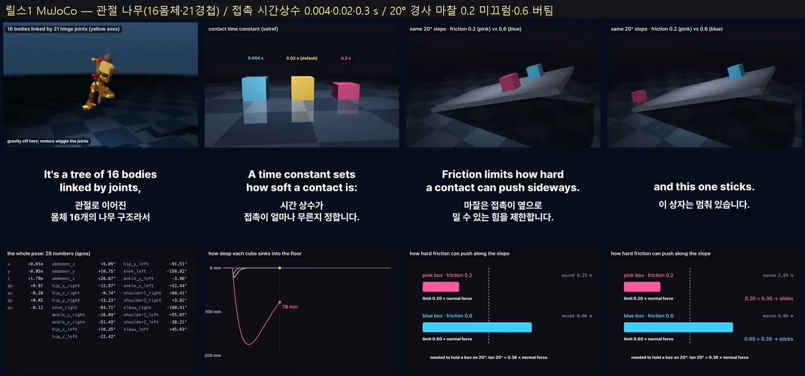
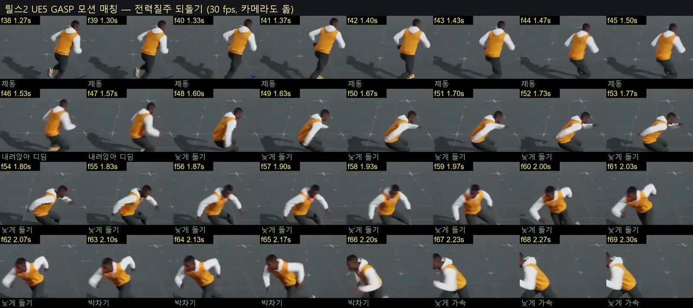
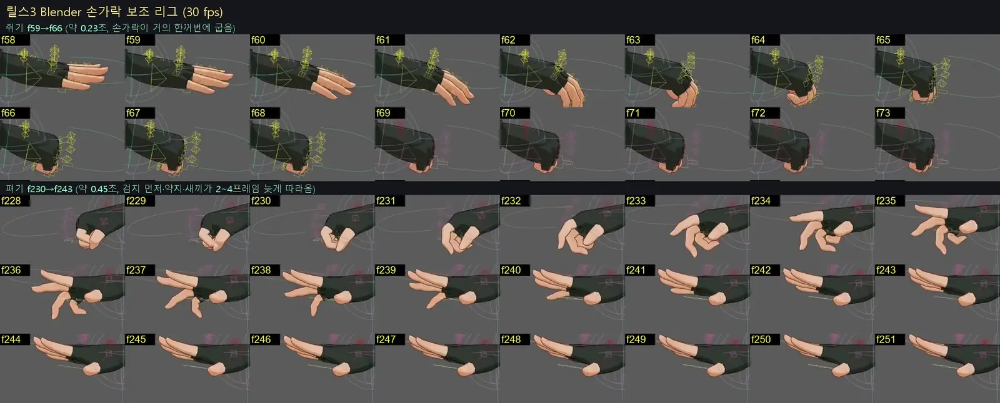
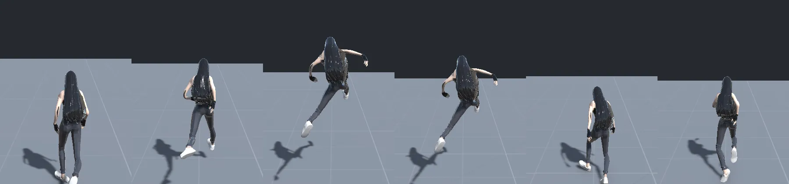
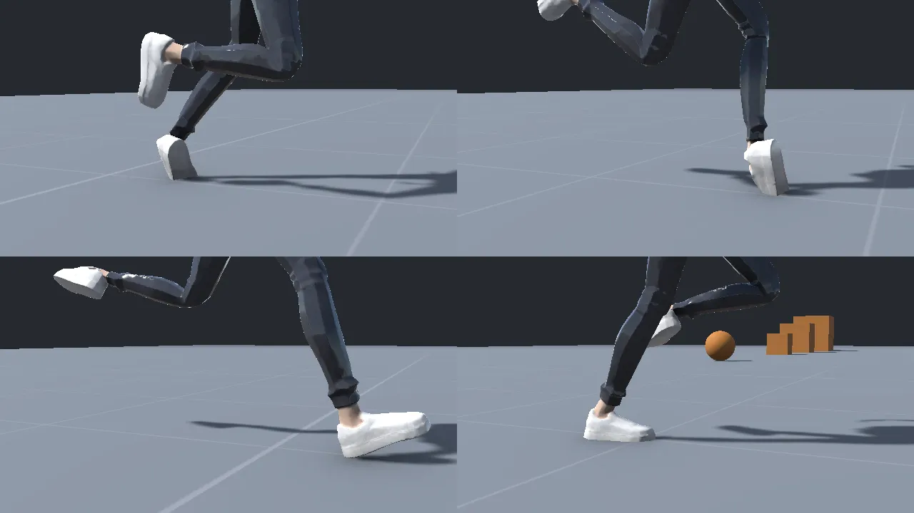

조정값 15개
지금 값과 네 가지 근거
← 표를 옆으로 밀어 보세요 →
| 조정값 | 지금사용자 값 | 사람모캡 측정 | 사람논문 | ARPG디아·로아 추천 추정 | 3인칭 액션소울·몬헌 등 추천 추정 | 메모 |
|---|---|---|---|---|---|---|
| 이동 | ||||||
| 발 마찰 (그립) | 0.9 | 0.9꺾을 때 최대 0.75–1.05 g | 0.74최대 컷 평균 (0.41–1.07), 멈춤 ≥ 0.8 | 1.1–1.2멈춤 0.47–0.51 s | 1.00.9–1.1, 멈춤 0.57 s | 맞음 값은 맞아요. 멈춤도 이 한도를 써서 사람보다 4배 빨리 서는 게 문제예요. |
| 출발 가속 (m/s²) | 7 | 2.7평균, 순간 최대 4.7–6.6 | 6–10처음만 세고 속도 붙으면 줄어듦 | 10D4 첫 보폭 0.17 s | 98–10, 출발 0.25–0.8 s | 갈림 사람은 첫 걸음만 세요. 속도가 붙을수록 줄이는 곡선이 둘을 이어 줘요. |
| 공중 조작 (m/s²) | 2 | —공중에선 못 바꿈 | 0물리 | 2자유 점프가 없어 근거 없음 | 1.51–2, 소울류는 거의 없음 | 맞음 무게감을 더 원하면 조금 낮게. |
| 서서 도는 빠르기 (°/s) | 600 | 120회전 시간 맞춤, 순간 최대 234 | 155180° 디딤 돌기 최대 | 600–650D4 출발 선회 550–700 | 720600–800, 엘든 링 서서 180° 600–670 | 갈림 사람의 4배. 회전에서 풀어요. |
| 달리며 도는 빠르기 (°/s) | 220 | 100회전 시간 맞춤, 순간 최대 172–217 | 76–1235.5 m/s에서 가는 방향 추정 | 300–36090° 꺾기 0.25–0.3 s | 500450–600 + 큰 각도는 피벗 | 갈림 가장 크게 갈리는 값. 220은 양쪽 어디에도 안 맞아요. |
| 크게 돌 때 감속 (0~1) | 0.73 | 0.890°만 0.33, 180°만 0.77–0.95 | 3–6걸음45° 거의 안 줄임, 90° 3–5걸음, 180° 3–6걸음 제동 | 0.85–0.9반대면 멈췄다 피벗 | 0.75유지, 짚는 자세가 없는 게 문제 | 맞음 감속 규칙을 (1 + cos) / 2로 바꾸면 0.9 하나로 90°·180°가 다 맞아요 추정 |
| 점프 높이 (m) | 0.55 | 0.3제자리 보통 0.21, 달리며 최대 0.44 | 0.35–0.37반동 점프 | —자유 점프 없음 | 0.6엘든 링 공중 0.70 s 추정 | 갈림 지금은 사람의 1.5배, 게임 쪽에 가까워요. |
| 떨어질 때 중력 배수 | 1.63 | 1.0공중 g 9.0–9.8, 내릴 때도 같음 | 1물리 | —근거 없음 | 1.81.6–2.0 | 갈림 사람에겐 없는 게임 장치. 무게감을 위해 남겨도 돼요. |
| 몸 반응 | ||||||
| 돌 때 안쪽으로 기울기 배수 | 0.25 | 0.5몸통 0.25–0.69, 전신 0.82 | 1곡선 단거리 계산 13.4°, 측정 10–15° | 0.3 | 0.350.3–0.4 | 올리기 0.25가 맞아 보인 건 게임 옆 가속이 커서예요 (42° 대 사람 27°). |
| 출발·멈춤 앞뒤 기울기 배수 | 0.30 | 0.850.39–1.46 | 0.6–1첫 걸음 힘 방향 26–30° 추정 | 0.35–0.4 | 0.55출발 약 23° | 올리기 몸을 판자처럼 통째로 기울이면 어색해요. 엉덩이 낮추기와 같이 올려요. |
| 최대 기울기 (°) | 14.5 | 20몸통 옆 8–22, 전력 180° 19–36 | 25–35최대 컷 μ 0.74 → 36° 추정 | 18 | 2624–28, 몬헌 출발 25–30° | 올리기 지금 한도로는 출발 기울기가 중간에 잘려요. |
| 기울기 따라가는 시간 (초) | 0.069 | 0.03늦음 0–0.033 s | 0.05–0.12반력 50 ms 안에 최대 | 0.07–0.08 | 0.090.08–0.1 | 맞음 사람은 거의 동시, 게임은 살짝 늦게 해서 무게를 보여요. |
| 착지 눌림 (cm / 낙하 m/s) | 1.5 | 7착지 246번, 4.5–8 | 6–7착지 무릎 각도에서 계산 추정 | —근거 없음 | 43–5 | 올리기 근거가 모두 3배 이상. "중력이 안 느껴짐"의 유력 원인이에요. 내려가는 데 0.1–0.27 s를 주면 툭 꺼지지 않아요. |
| 최대 착지 눌림 (cm) | 38 | 370.78 m 턱에서 뛰어내림 | 35–43부드러운 착지 무릎 117° 추정 | 25–30 | 38유지 | 맞음 |
| 눌림 회복 시간 (초) | 0.3 | 0.45깡충 0.24 – 내려뛰기 0.78 | 0.3–0.5높을수록 길게 추정 | 0.3–0.35D4 정지 버팀 0.3–0.45 s | 0.4엘든 링 보통 착지 0.4–0.45 s | 올리기 조금만. 높이에 비례해 늘리면 더 좋아요. |
가장 크게 갈리는 곳
방향 바꾸기, 초당 몇 도?
가는 방향 꺾기사람 · 5.5 m/s · 계산
가는 방향 꺾기사람 · 3 m/s · 계산
몸 돌기 순간 최대사람 · 모캡
달리며 도는 빠르기마디 지금
서서 도는 빠르기마디 지금
출발 선회ARPG · 디아블로 IV
몸 돌리기3인칭 · 소울·몬헌·P·스텔라
둘 다 맞아요
사람은 발 마찰 때문에 가는 방향을 초당 76~120°보다 빨리 못 꺾어요. 게임은 몸만 450~1200°/s로 돌리고, 모자란 물리는 피벗 동작(낮게 짚기 → 다시 박차기, 합계 0.85~1.3초)으로 보여 줘요.
그래서 마디는 몸 회전은 빠르게, 135°가 넘는 반전은 피벗 상태로 넘기는 게 맞아요. 220°/s로 호를 그리며 도는 게임은 하나도 없었어요.
사람 숫자
모캡으로 잰 값과 논문 값
| 항목 | 모캡 측정 | 논문 |
|---|---|---|
| 속도 | 조깅 3.17 · 전력 5.34 m/s | 조깅 2.5–3.5, 빠른 달리기 4.5–5.5 m/s |
| 걸음 | 2.73 /s · 전력 3.53 /s | 2.9 m/s에서 분당 173, 엘리트 5.4 m/s에서 196 |
| 디딤 / 공중 | 0.27 / 0.08 s · 전력 0.17 / 0.12 s | 5.4 m/s 0.17–0.18 / 약 0.13 s |
| 골반 위아래 | 8–13 cm | 무게중심 8.7 cm (2.9 m/s) |
| 몸통 앞 기울기 | 절대 15° · 전력 26° | 일정 속도 평균 약 7° 추정 |
| 발목 한 보 범위 | 44–58° | 디딤 중 최대 발등굽힘 26°, 박차기 발바닥굽힘 17–23° |
| 디딘 발 미끄러짐 | 6–20 cm/s (잡음 포함) | 0 (구르는 동안 축만 바뀜) |
| 착지 방식 | — | 뒤꿈치 68–89% |
| 항목 | 모캡 측정 | 논문 |
|---|---|---|
| 속도 | 1.46 m/s | 스스로 고른 속도 1.30–1.46 m/s |
| 걸음 | 2.0 /s | 분당 109–122 추정 |
| 디딤 | 0.61 s · 두 발 0.12 s | 입각 0.62–0.70 s, 두 발 지지 21–24% |
| 골반 위아래 | 3–6 cm | 무게중심 4.8 cm (1.6 m/s) |
| 머리 끄덕임 | 4–9° | — |
| 발목 한 보 범위 | 34–44° | 발등굽힘 10–15° ~ 발바닥굽힘 20° |
| 발가락 젖힘 | 밀어낼 때 +27–35° | 엄지발가락 48 ±12° (Perry 65°) |
| 달리기로 바뀜 | — | 약 2.0 m/s 추정 |
| 항목 | 모캡 측정 | 논문 |
|---|---|---|
| 달리기 출발 | 90%까지 1.14 s · 1.76 m · 평균 2.5 m/s² | 처음 6–10 m/s², 속도가 붙을수록 지수적으로 줄어듦 |
| 전력 출발 | 1.83 s · 4.25 m · 평균 2.65 | 단거리 선수 90%까지 약 12걸음 추정 |
| 걷기 출발 | 1.17 s | 2걸음이면 정상 속도 |
| 출발 몸 기울기 | 세게 출발할 때 최대 약 18° | 첫 걸음 힘 방향 26–30° 추정 |
| 달리기 멈춤 | 3.5 m/s에서 1.62 s · 2.16 m · 최대 −3.8 m/s² | 7.35 m/s 최대 노력 1.50 s · 6.86 m · 최대 −8.48 |
| 멈출 때 몸 | — | 발을 무게중심 0.39–0.44 m 앞에 꽂음 → 뒤로 약 25° 추정 |
| 항목 | 모캡 측정 | 논문 |
|---|---|---|
| 달리며 90° | 1.10 s · 남은 속도 0.73 · 최대 172°/s | 디딤발 접지 0.18 s, 제동 2.7–5.4걸음 |
| 달리며 180° | 1.27 s · 남은 속도 0.12 · 최대 204°/s | 직전 걸음이 가장 센 브레이크 (0.38 s, 1.8 체중) |
| 제자리 180° | 1.13 s · 최대 234°/s | 최대 155°/s, 반감기 0.6 s |
| 45° 컷 | — | 세 걸음에 나눠 돎, 디딤 걸음에서 15°만 |
| 몸통 안쪽 기울기 | 90° 달리기 4–18° · 전력 180° 19–36° | 곡선 단거리 10–15° |
| 머리 | — | 몸보다 27–127 ms 먼저 돎 |
| 항목 | 모캡 측정 | 논문 |
|---|---|---|
| 제자리 점프 | 보통 0.21 m · 최대 0.31 m | 반동 점프 0.35–0.37 m |
| 달리며 점프 | 최대 0.44 m | — |
| 예비 동작 | — | 0.36 m 내려가며 0.70 s, 미는 데 0.30 s |
| 공중 중력 | 9.0–9.8 m/s², 내릴 때도 같음 | 9.81 |
| 착지 눌림 | 닿는 속도 1 m/s당 7–8 cm | 6–7 cm 추정 |
| 0.6 m 턱 착지 | 골반 21 cm · 바닥까지 0.27 s | 무릎 80°, 반력 6.6 체중 |
| 회복 | 깡충 0.24 · 제자리 0.42 · 달리며 0.55 · 내려뛰기 0.78 s | 무릎 최대까지 0.14–0.16 s 추정 |
게임 타이밍
영상 프레임을 세어 잰 값
← 표를 옆으로 밀어 보세요 →
| 게임 | 출발 | 멈춤 | 회전·피벗 | 회피 | 공격 준비 / 타격 / 전체 | 착지 회복 |
|---|---|---|---|---|---|---|
| 디아블로 IVARPG | 0.17 s깊게 숙인 첫 걸음 | ≤ 0.07 s+ 제자리 버팀 0.3–0.45 s | 550–700°/s서서 출발하며 90° | 쿨 5 s공격 동작을 끊음 | 포즈 3개로 블로킹, 이동 클릭으로 후딜 끊기 | 점프 없음 |
| 로스트아크ARPG | — | — | 시선이 먼저, 몸이 나중 | 0.27 + 0.27 s대시 이동 + 미끄러지는 회복 | 넘어지면 기상 행동을 직접 고름 | 점프 없음 |
| 패스 오브 엑자일 2ARPG | — | — | 조준과 이동 분리 | 0.6–0.75 s 추정3.7 m, 앞 절반만 회피, 쿨 없음 | 구르기로 거의 다 취소, 공격속도별 꼬리만 자른 버전 약 4개 | 점프 없음 |
| 엘든 링3인칭 | 0.25–0.33 s약 20° 숙임 | 0.45–0.5 s왼발·오른발 따로 | 0.23 s · 180°≈780°/s, 짚기 없음 | ≈ 0.9 s무적 0.47 s | 0.37–0.4 / 0.07 / 1.37 s | 0.4–0.45 s높은 곳 1.1–1.2 s, 손 짚음 |
| 몬스터 헌터 와일즈3인칭 | 0.6–0.8 s25–30° 숙임 | ≈ 0.67 s뒤로 젖혀 제동 | 1.15–1.3 s · 180°회전 0.4 s → 짚기 → 재가속 | 0.5 + ≥ 0.4 s시작 2프레임 | 대검 0.13 s 내려침, 0.27 s 박힘. 히트스톱 줄였다 되돌림 | 1.07 s약 1 s 낙하 뒤 |
| P의 거짓3인칭 | ≈ 0.17 s출발 동작 없음 | ≈ 0.47 s제동 한 걸음 | 0.85 s · 180°회전 0.3 s → 웅크려 박차기 | ≈ 1.13 s이동 0.63 s | 0.3 / 0.1 / 1.57 s | ≈ 0.75 s착지하자마자 구르기 |
| 스텔라 블레이드3인칭 | ≈ 0.83 s약 40° 숙임 | ≈ 0.63 s옆으로 미끄러져 전투 자세 | 0.85 s · 180°회전 0.15–0.2 s → 짚고 버팀 | ≈ 1.15 s돌진 0.33 s | 0.07 / 0.13 / 1.23 s마무리 자세 0.5 s 유지 | 0.95 s0.65 s 깊게 웅크림 |
| 원신3인칭 · 애니풍 | 1프레임대시 | ≈ 0.43 s | 0.4 s · 90°호를 그림, 짚기 없음 | 0.33 s바로 질주로 | 판정 0.17 s, 히트스톱 0.03–0.15 s | — |
| 명조3인칭 · 애니풍 | — | — | 회피 때 1–2프레임에 몸 방향 전환 | ≈ 0.75 s0.05 → 0.22 → 0.2 → 0.22 | — | — |
| 검은사막3인칭 | 기본 이동은 못 잼. 스킬마다 슈퍼아머·전방 가드·무적이 붙고, 무게는 이펙트·카메라 쪽. | |||||
게임들이 같이 하는 것
- 판정은 즉시, 무게는 그림으로D4는 0.17 s에 달리지만 첫 걸음을 깊게 숙여요. 스텔라의 0.5 s 의도적 지연은 불만을 샀어요.
- 출발은 첫 1~2걸음의 "밀기"20~40° 숙임, 정상 달리기까지 0.25~0.8 s.
- 멈춤은 제동 걸음 + 뒤로 젖힘0.43~0.67 s. 엘든 링은 왼발·오른발 멈춤이 따로 있어요.
- 몸은 빠르게, 큰 반전은 피벗450~1200°/s. 빠른 회전 → 짚기 → 박차기, 합계 0.85~1.3 s.
- 회피 무적은 앞쪽 25~50%전체 0.75~1.15 s, 나머지는 회복.
- 타격은 짧고 무게는 앞뒤에서타격 0.07~0.13 s. 준비·회수·히트스톱(0.03~0.15 s)이 무게를 정해요.
- 착지 회복은 높이에 따라 단계로보통 0.4 s, 높은 곳 1.1 s에 손 짚기.
- 회복 꼬리는 끊을 수 있게타격 프레임까지만 고정, 뒤는 회피·이동으로 취소.
- 관성은 카메라와 머리카락이카메라 0.2~0.5 s, 머리카락·천 약 0.3 s 늦게 따라와요.
마디에 아직 없는 것
느낌에 미치는 순서대로
-
피벗 · 제자리 돌기
"방향 전환이 어색함"
135° 넘으면: 빠른 회전 0.15–0.3 s → 낮게 짚기 0.2–0.3 s → 박차기몸 회전은 남은 각도에 비례(반감기 0.15–0.27 s). 서서 돌 땐 90°·180° 두 종, 머리가 먼저.2차 숫자 →
-
출발 · 멈춤
"달리는 것 같지 않음", 출발·멈춤의 무게
출발 0.15–0.25 s 밀기 + 엉덩이 5–10 cm 낮춤 · 멈춤 0.3–0.67 s멈춤은 남은 제동 거리로 재생 위치를 맞추고, 왼발·오른발 두 벌.2차 숫자 →
-
높이별 착지
"중력·무게가 없음"
보통 0.4 s · 높은 곳 0.9–1.1 s 손 짚기 · 점프 전 웅크림 0.1 s낙하 속도가 기준을 넘으면 무거운 착지로. 이륙 때 발을 몇 프레임 땅에 남김.2차 숫자 →
-
회피
전투 이동의 무게와 반응
박차기 0.05 → 이동 0.2–0.3 → 감속 0.2 → 회복 0.2–0.4 s무적은 앞쪽에만. 거리 3–4 m, 평균 속도는 달리기 정도.
-
캔슬 창
공격이 조작을 막는 느낌
타격 프레임 뒤: 회피는 즉시, 이동은 조금 뒤빨라지면 꼬리만 짧은 버전으로 바꿔요. 빨리 감기처럼 안 보이게.
-
피격 반응
맞아도 밋밋함
가벼운 피격 = 상체 덧셈 레이어 · 강한 피격 = 넘어짐 → 기상D2는 0.36–0.6 s 잠금, D4는 거의 안 막음, 로아는 기상 행동을 고르게 해요.
그다음: 머리카락·천 스프링(0.2–0.3 s 늦게), 카메라 가로 지연 0.15–0.25 s, 달리기로 돌아갈 때 발 위상 맞추기.
2차 조사 · 전환 동작
달리기와 서기 사이
출발·멈춤·되돌기·꺾기·제자리 돌기·착지·발끝 벌림을 걸음 단위로 다시 쟀어요. 모캡 파일 54개를 더 받았고, 게임은 엔진 문서·개발 발표에서 만드는 법까지 봤어요.
달리기 클립은 안 벌어졌어요
마디 Mixamo 달리기의 발끝 벌림은 +1.3°, 발 사이 7.6 cm. 사람(4–11°)보다 오히려 덜 벌어져요.
다른 건 Heroine 뼈대의 쉬는 자세예요. 두 발목 사이 40.6 cm (원본 뼈대 18.2 cm), 골반선이 10.4° 돌아 있어요.
벌어져 보이는 건 이 자세가 달리기에 그대로 얹히기 때문으로 보여요 추정
| 항목 | 사람모캡 | ARPG디아 IV · 로아 · PoE2 | 3인칭소울 · 몬헌 · P의 거짓 · 스텔라 |
|---|---|---|---|
| 길이 | 1.14 s · 3걸음 달리기 90%까지걷기 2걸음 1.05 s · 전력 5걸음 1.72 s | 0.17 s 첫 보폭 (디아 IV) | 0.17–0.83 sP 0.17 · 엘든 0.25–0.33 · 몬헌 0.6–0.8 · 스텔라 0.83 |
| 먼저 움직이는 것 | 몸통 숙임이 첫 발 떼기 0.27 s 전, 무게중심은 0.46 s 전 | 누른 그 프레임에 움직여요 (Fortnite 출발 동작 묶음) | |
| 숙임 | 몸통 최대 +34° (달리기)23–46°, 전력 +47°, 첫 발 뗀 뒤 0.4–0.6 s. 1차 18°와는 재는 기준이 달라요 (진행 방향·선 자세 대비) | 깊게 숙인 첫 걸음 하나 | 엘든 약 20° · 몬헌 25–30° · 스텔라 약 40° 추정첫 1–2걸음이 "밀기" |
| 첫 걸음 | 발 0.6 m 옮김, 공중 0.26 s보폭 0.60 → 1.64 → 2.10 → 2.38 m | 왼발 출발·오른발 출발 2개가 기본 (Epic) | |
| 첫 발 좌우 | 앞으로는 규칙 없음. 옆으로 달려 나가면 가는 쪽 발 74% | 입력과 몸 방향 각도로 앞 / 90° / 180° 출발을 골라요 | |
| 방향 바꿔 출발 | — | 서서 90°를 0.17 s550–700°/s | 몸 돌리기 0.1–0.13 s 후 박차기700–900°/s |
| 캔슬 | — | 언제든. 손 떼면 정지, 반대로 누르면 피벗 | |
- 속도 말고 입력으로 출발을 판정해요. 속도 값은 0.08 s 늦게 따라와요.
- 숙임은 입력 순간 시작, 첫 발은 0.1–0.2 s 안에 추정
- 앞뒤 기울기 한도는 35–45°까지 열어 둬요 추정
- accel 7이면 0 → 5.55 m/s에 0.79 s 계산
| 항목 | 사람모캡 | ARPG디아 IV · 로아 · PoE2 | 3인칭소울 · 몬헌 · P의 거짓 · 스텔라 |
|---|---|---|---|
| 시간 · 거리 | 1.57 s · 2.12 m 3.5 m/s 달리기에서걷기 1.13 s · 0.61 m | 위치는 ≤ 0.07 s, 자세만 0.3–0.45 s 버팀 (디아 IV) | 0.45–0.67 s엘든 0.45–0.5 · P 0.47 · 스텔라 0.63 · 몬헌 0.67, 질주 정지 0.55–0.6 |
| 걸음 | 달리기 4걸음, 끝으로 갈수록 1.21 → 1.13 → 0.76 → 0.28 → 0.01 m마지막은 발을 나란히 모으는 걸음 | — | 제동 걸음 + 앞발 꽂기엘든은 왼발·오른발 정지가 따로 |
| 브레이크 발 | 끝에서 셋째 걸음, 무게중심보다 0.44 m 앞그다음 0.23 m, 마지막 0.11 m | — | Paragon: 멈출 지점 약 1.05 m 앞에서 정지 동작 시작, 남은 거리로 프레임을 정함 |
| 젖힘 | 전신 −27° (달리기), 걷기 −13°정지 0.9 s 전에 가장 많이 | — | 몸을 뒤로 젖혀 제동 |
| 넘침 | 무게중심이 1–2 cm만 더 갔다 돌아와요 | — | |
| 캔슬 | — | 출발·피벗·회피·공격 모두 즉시. 가라앉는 뒷부분은 언제 끊어도 돼요 | |
- 지금 grip 0.9면 5.55 m/s에서 0.63 s · 1.74 m에 서요 계산
- 2.5 m/s가 넘을 때만 정지 동작. 재생 위치는 남은 제동 거리로 (Motion Time), 좌우는 Mirror로.
- "줄어드는 두 걸음 + 모으기" 3박, 휘청이는 스프링 없이 넘침 2 cm 안 추정
| 항목 | 사람모캡 · 달리다 반대로 | ARPG디아 IV · 로아 · PoE2 | 3인칭소울 · 몬헌 · P의 거짓 · 스텔라 |
|---|---|---|---|
| 전체 | 1.43 s 옛 90% → 새 90% (2.9 m/s)1.10–2.95 s, 전력 1.90 s | 즉시로 보임 추정 | 엘든 0.23 s, 짚기 없음 / 짚고 다시 0.85–1.3 sP·스텔라 0.85 · 몬헌 1.15–1.3 |
| 순서 | 제동 0.53 → 디딤 0.68 → 재가속 0.87 s | — | 빠른 회전 → 짚기 → 박차기회전 몬헌 0.4 · 스텔라 0.15–0.2 s |
| 제동 | 디딤 포함 2걸음, 1.0 m 더 가서 0.16 m/s까지거의 멈춰요. 전력은 4걸음 · 2.2 m | — | Paragon: 반전 약 60 cm 앞에서 멈추는 동작, 뒤로 약 3 m 밀기 |
| 디딤 동안 회전 | 71° (전체의 38%)를 102°/s로순간 최대 200°/s (전력 246). 나머지는 앞뒤 걸음에서 | — | 일부 구간만 애니메이션이 회전을 정함 (Control) |
| 디딤발 | 좌우 규칙 없음 (도는 쪽 발 48%). 그때 땅에 있던 발로 돌아요 | — | |
| 무게중심 | 디딤발 13 cm 앞에서 되돌아서요디딤발을 넘는 건 10번에 1번 | — | |
| 트리거 | — | 반대 클릭 | 속도 > 2 m/s · 각도 > 145° (유니티 3D Game Kit)UE 샘플은 스트레이프 45° |
| 캔슬 | — | 회피는 언제든, 공격은 짚은 뒤 추정 | |
- 속도 2 m/s, 각도 135°를 넘으면 피벗: 회전 잠금 → grip 제동 → 0.15–0.25 s에 180° → 박차기 추정
- grip 1.0 · accel 9면 합계 약 1.2 s, 몬헌형이에요. 소울형 0.23 s는 마디 마찰 물리로는 안 나와요 계산
- 회전은 코드 하나만. 동작 회전과 겹치면 270°까지 돌아요.
| 항목 | 사람모캡 · 2.75 m/s 달리기 | ARPG디아 IV · 로아 · PoE2 | 3인칭소울 · 몬헌 · P의 거짓 · 스텔라 |
|---|---|---|---|
| 디딤발 | 바깥 발 65% (옆걸음 꺾기)안쪽 발 + 다음 발 교차 26% | — | |
| 디딤 | 0.35 s, 이 발이 42° (48%)만 꺾어요15° 넘게 꺾는 걸음 2개 (1–4) | — | |
| 몸 회전 | 10–90% 1.47 s빠른 절반 0.82 s | 90° 0.25–0.3 s 추정 | 몸만 450–1200°/s, 피벗 없음원신 90° 0.4 s, 호를 그림 |
- 90°를 한 디딤에 다 꺾지 말고 약 25° / 45° / 20°로 세 걸음에 나눠요 추정
- 90–135°는 피벗 없이 빠른 회전 (turnRun 450–600).
| 항목 | 사람모캡 · 발로 걸어 돎 | ARPG디아 IV · 로아 · PoE2 | 3인칭소울 · 몬헌 · P의 거짓 · 스텔라 |
|---|---|---|---|
| 걸음 | 발 한 번에 약 85°90° 2걸음 · 180° 4걸음 · 360° 9걸음 | 없음, 몸이 바로 돎 | 엘든 서서 180°, 한 발 디딤 |
| 시간 | 90° 1.1 s · 180° 2.3 s최대 105–121°/s. 1차 1.13 s는 빠른 절반만 잰 값 | 550–700°/s (디아 IV) | 엘든 180° 0.27–0.3 s |
| 순서 | 도는 쪽 발이 먼저 벌려 딛고 다른 발이 모아요90° 4/4, 180° 5/6 | — | Paragon: 90°는 일부러 느리게, 180°는 빨리, 머리가 먼저 |
| 빨리 돌기 | 뛰어서 180°: 공중 0.17 s, 최대 250°/s | — | |
| 트리거 | — | 커서·키 방향으로 즉시 | 조준·락온 중 몸과 시선이 50° 넘게 벌어질 때 (UE 샘플), 멈춘 직후 스틱 톡 |
- 입력이 곧 이동이라, 순수 제자리 돌기는 키를 짧게 톡 눌렀을 때와 나중의 락온뿐이에요.
- 서서 다른 방향으로 걷는 건 출발이 맡아요.
- 회전은 코드가 600–720°/s, 동작은 돈 각도에 맞춰 재생.
| 사람 · 모캡 | 닿는 속도 | 골반 내려감 | 무릎 최대 | 90% 회복 | 다음 발 |
|---|---|---|---|---|---|
| 서서 0.12 m | 1.5 m/s | 10 cm | 66° | 0.27 s | 0.30 s |
| 서서 0.19 m | 1.9 m/s | 12 cm | 64° | 0.30 s | 0.33 s |
| 서서 0.33 m | 2.55 m/s | 20 cm | 88° | 0.73 s | 1.02 s |
| 내려뛰기 0.63 m | 3.5 m/s | 25 cm | 86° | 0.77 s | 0.52 s |
| 내려뛰기 0.91 m | 4.2 m/s | 41 cm | 103° | 0.62 s | 0.37 s |
| 달리며 착지 | 1.6–3.2 m/s | 12–22 cm | 79–94° | 0.27–0.67 s | 0.15–0.27 s |
골반 ≈ 7–8 cm × 닿는 속도 (느슨함, R² 0.28) · 바닥까지 0.075 s × 속도 · 회복 0.21 s × 속도
| 게임 | ARPG디아 IV · 로아 · PoE2 | 3인칭소울 · 몬헌 · P의 거짓 · 스텔라 |
|---|---|---|
| 단계 | 자유 낙하 없음 | 엘든 보통 0.4–0.45 s · 높은 곳 손 짚기 1.1–1.2 s몬헌 1.07 s · 스텔라 짧은 점프도 0.95 s · P는 착지하자마자 구르기 0.75 s |
| 판정 | — | 착지 속도로 2–3단계UE 샘플 가벼움·무거움, 3D Game Kit는 수직 −10 m/s · 앞 5 m/s면 구르기. 엘든 낙하 피해는 높이 차만 봄 |
- 지금 점프 (0.55 m, 낙하 중력 16 m/s²)는 4.2 m/s로 닿아요. 사람이 0.9 m에서 뛰어내린 속도예요 계산
- 6 m/s 아래 눌림만 · 6–9 m/s 착지 동작 0.4–0.5 s · 9 m/s 넘으면 손 짚기 0.9–1.1 s 추정
- 눌리는 시간 0.075·v, 회복 0.2·v. 공중에서 가장 빠른 낙하 속도를 기억해 골라요 추정
| 항목 | 사람모캡 · 두 발 평균, + = 발끝 바깥 | 마디Blender로 FBX만 읽음 |
|---|---|---|
| 걷기 발끝 벌림 | −2…+12°CMU −2.4 · LAFAN1 5.2 · Bandai 12.4 | Mixamo Walk +0.6° |
| 걷기 발 사이 폭 | 8–16 cm | 15.2 cm |
| 달리기 발끝 벌림 | 4…11°CMU 4.2 · LAFAN1 8.7 · Bandai 10.8, 전력 8.5 | Mixamo Run +1.3°왼발 +6.2 · 오른발 −3.6 |
| 달리기 발 사이 폭 | 1–7.5 cm | 7.6 cm |
| 쉬는 자세 발목 사이 | — | Heroine 40.6 cmMixamo 원본 뼈대 18.2 cm |
| 골반선 | — | Heroine 10.4° 돌아 있음엉덩이 관절 왼쪽 12.5 · 오른쪽 9.7 cm, 오른쪽이 4 cm 앞. 발 자체는 정면 |
- Humanoid 리타깃은 쉬는 자세를 T자세로 보고 움직임을 얹어요. 벌어진 다리가 달리기에 그대로 더해지는 것으로 보여요 추정
- 확인 ①: Heroine Avatar에서 Enforce T-Pose, 또는 Blender에서 다리 곧게 · 엉덩이 좌우 대칭으로.
- 확인 ②: 게임 안에서 디딘 발을 다시 재서 달리기 발끝 5–10°, 발 사이 8 cm 아래인지. 화면 속 Heroine 발 각도는 아직 못 쟀어요.
마디에 만드는 순서
걷기·달리기가 선 다음에 붙여요.
- 루프는 코드, 사이 동작은 애니메이션위치는 코드가 정하고, 동작 재생 위치를 남은 거리·각도에 맞춰요.
- 13개면 기초대기 · 달리기 · 출발 좌우 · 정지 좌우 · 곡선 달리기 · 방향 바꿔 출발 (Epic).
- 반응은 첫 프레임무게는 그림으로. 입력 지연으로 낸 스텔라 0.5 s는 불만을 샀어요.
- 정지모든 이동이 이걸로 끝나요. 제동 거리를 이미 알아서 재생 위치 한 줄로 맞춰요.
- 출발정지와 짝. 90°·180° 방향 바꿔 출발을 넣으면 제자리 돌기가 따로 필요 없어요.
- 피벗 180°turnRun을 450–600으로 올릴 때 같이 넣어야 팽이처럼 안 돌아요.
- 착지 단계Land는 이미 있어요. 높은 곳이 생기면 중간·무거움을 더해요.
- 회피전투를 시작할 때. 코드 속도 곡선이라 손맛을 숫자로 맞춰요.
- 캔슬 창 3단회피가 생긴 뒤. Attack에 프레임 값 2개.
- 제자리 돌기락온·조준을 넣을 때만.
릴스 두 채널
가져올 것만
@gamedevinspire · Unity · 릴스 14 + 튜토리얼 3
벽에 손 짚기
- 어깨에서 좌우로 레이를 쏴서 맞으면 그 점이 손 목표. 팔마다 Two Bone IK.
- 켜고 끌 땐
rig.weight = Mathf.MoveTowards(…)로 서서히. 목표도 스무딩해서 떨림을 막아요. - 몸 전체 반응: 척추 3개에 나눈 Aim, 머리 따라보기 0.47 s, 엉덩이 내리기 최대 0.19.
- 걷기·달리기는 Speed 하나로 섞는 블렌드 트리(0 / 0.5 / 1).
벽 손 거리·속도 숫자는 영상에 없음
@mvoidey · 아케인 참여 애니메이터 · 72편 중 동작 12편
대비와 홀드
- 작은 동작 → 0.6 s 멈춤 → 6~9프레임 예비동작 → 발사.
- 임팩트는 1~3프레임 정지 + 화면 플래시. 그 순간 몸은 멈추고 이펙트가 움직여요.
- 런 사이클 12프레임(24 fps, 한 주기 0.5 s)에 몸통 25~35° 숙임, 디딜 때 가장 낮음.
- 서 있을 땐 체중을 한쪽 다리에. 무거운 몸은 상체가 한 박자 늦게.
눈대중 값, ±20% 이상 틀릴 수 있음
3차 조사 · 릴스 3편
닿고, 되돌고, 쥐는 법
물리 엔진 MuJoCo 설명, UE5 모션 매칭 되돌기, Blender 손가락 리그. 프레임을 세고, 화면 속 숫자는 원본 코드·문서로 확인했어요.
착지 눌림에 시간이 없어요
MuJoCo 접촉은 겹친 만큼을 시간을 두고 밀어내요. 마디 착지 눌림은 닿는 프레임에 바로 목표 깊이라 내려가는 구간이 0 s예요.
깊이는 그대로 두고 바닥까지 0.075 s × 닿는 속도만 넣으면 돼요. "중력이 안 느껴짐"의 원인 중 하나로 보여요 추정
index.opensource · 큐레이션 @hyun2xyz · 2026-10-09 · 72 s · MuJoCo 3.14
관절 나무 · 접촉 · 마찰 · 휴머노이드 100개

| 항목 | 릴스원본 코드·문서로 확인 | 마디 지금 |
|---|---|---|
| 몸 구조 | 몸체 16 · 경첩 21 · 자세 숫자 28개humanoid.xml을 받아 셈. 자유도 27 × 100명 = 2,700 | 랙돌은 Rigidbody + ConfigurableJointUnity ArticulationBody가 MuJoCo 같은 관절 나무 방식 |
| 접촉 시간상수 | 0.004 · 0.02 · 0.3 s (0.02가 기본)임계 감쇠라 안 튀어요. 0.3 s 상자는 약 17–18 cm 파묻혔다 천천히 올라와요 (그래프 눈금, ±1 cm) | 닿는 프레임에 바로 목표 깊이내려가는 시간 0 s. 사람은 바닥까지 0.075 s × 닿는 속도 |
| 20° 경사 | 버티려면 마찰 tan 20° = 0.360.2 상자는 2.69 m 미끄러지고 0.6 상자는 0 m | 땅이면 경사 중력을 무조건 다 상쇄 (40° 안)grip을 0.4로 낮춰도 40°에 서 있어요. 사람이면 22°부터 미끄러져요 계산 |
| 관절 힘 | 엉덩이 120 : 무릎 80 : 몸통·팔꿈치 40 : 발목·어깨 20 | 모든 마디 같은 힘spring 3600 × 관성 |
휴머노이드는 중력을 끄고 모터로 흔든 것 · 사람처럼 걷는 건 그 위 제어기 몫 · 배울 건 땅과 만나는 규칙
- 착지 눌림: 내려가는 시간 0.075·v s (최소 0.06), 회복 smoothTime 0.07·v. 깊이(squash 1.5)는 그대로 계산
- 경사 버팀을 grip × g × cos θ로 잘라요. 버티는 경사가 grip에서 저절로 나와요.
- 랙돌 마디별 힘(다리 > 몸통 > 팔), ArticulationBody는 떨림이 보일 때만 추정
Chema Luque (@chemaluque_dev) · 2026-10-22 · 36 s · UE5 Game Animation Sample
모션 매칭 설명 + 전력질주 되돌기

| 단계 | 시간프레임 | 보이는 것 |
|---|---|---|
| 곧게 선 제동 | 0.13 sf42–45 | 상체가 서고 보폭이 짧아져요 |
| 내려앉으며 디딤 | 0.10 sf46–48 | 무릎·엉덩이가 확 굽어요 |
| 낮게 돌기 | 0.50 sf48–62 | 쪼그린 채 새 방향으로. 고개가 먼저 돌고 엉덩이는 아직 옛 방향, 팔을 뻗어 균형, 손이 바닥 가까이 |
| 박차기 | 0.13 sf63–66 | 크게 숙인 채 밀어내요 |
| 낮게 가속 | — | 깊게 숙인 출발, 약 40° 추정 |
제동 → 박차기 끝 0.80 s · 사람 전력 되돌기 1.90 s · 스텔라·P의 거짓 0.85 s · 몬헌 1.15–1.3 s · 머리 25–30% 낮아짐 추정
| 그 밖에 | 본 것 |
|---|---|
| 걷다 180° | 약 0.5 s. 코트가 몸보다 늦게 돌고, 몸이 멈춘 뒤 0.4 s 더 펄럭여요. 앞 궤적이 몸보다 먼저 휘어요 |
| 고르는 기준 | 궤적 3 : 두 발 위치·속도 1 (Epic 문서 예시). 디딘 발과 맞는 프레임에서 들어가요 |
| 얹는 층 | 가속 기울기, 하체 비틀기, 발 IK, 관성 블렌딩 |
| 릴스 주장 | Fortnite 챕터 5부터 모션 매칭 → Epic 발표문을 옮긴 기사로 확인"초당 2000 자세"는 편집 그래픽, 검색 간격 기본값은 문서에 없어요 |
- 모션 매칭 자체는 안 해요. 동작이 몇 개뿐이라 싼 것만 가져와요.
- 지금 되돌기는 Stop 1.8배 → Start라 몸이 곧게 선 채 멈췄다 출발해요. 낮게 디디고 도는 Pivot 상태로.
- Posture(고개 먼저)가 Heroine 장면엔 안 붙어 있어요. 입력 방향을 보게, 되돌기 땐 최대 90° 추정
3dbimops1 · 원작자 표시 @leedoppo · 2026-10-13 · 11 s · Blender
컨트롤 하나로 손가락 여럿을 굽히는 보조 리그

| 동작 | 시간프레임 | 보이는 것 |
|---|---|---|
| 주먹 쥐기 | 0.23 sf59–66 | 네 손가락이 거의 한꺼번에, 손목도 조금. 뿌리 마디부터 굽고 끝마디가 따라와요 |
| 주먹 펴기 | 0.45 sf230–243 | 검지가 먼저, 약지·새끼가 2–4프레임 늦게. 다 펴진 뒤 살짝 흩어졌다 모여요 |
| 물결 | 3–4프레임손가락 사이 | 한 손가락씩 차례로 굽어요. 엄지는 따로 |
끝마디 ≈ ⅔ × 가운데 마디 (Handrix 2003, 옮긴 인용) · 펴기가 쥐기의 2배 느린 건 이 릴스 하나의 연기 추정
- Heroine 손가락 뼈 0개, 메시도 네 손가락이 붙은 장갑 모양이라 손이 납작한 판으로 고정돼요.
- 장갑 리그: 붙은 네 손가락을 한 덩어리 3마디 + 엄지 3마디, Humanoid 가운데 손가락 칸에만 연결 추정
- 뼈가 생기면 손 레이어 하나, 값 Grip 0~1. 달리기 0.3–0.5 · 공격 직전 1.0 (0.2 s) · 힘 빼기 0 (0.45 s). 펼 때만 검지 0 · 중지 1 · 약지 2 · 새끼 3프레임 늦게
마디가 가져갈 것
- 착지 눌림에 내려가는 시간바닥까지 0.075·v s, 회복 0.07·v. 깊이는 사용자 값 그대로 ·
BodyReact몇 줄 · MuJoCo - 되돌기 전용 Pivot 상태짧은 제동 → 엉덩이 내리고 디딤 → 디딤 중에만 회전 → 박차기, 합 0.8 s 안팎 ·
Mover.Transitions+ CMU 되돌기나 Mixamo run_turn180 하나 · UE5 - 고개 먼저Posture를 Heroine에 붙이고 입력 방향을 보게, 되돌기 땐 최대 90° ·
Basics.cs+Posture· UE5 - 진입 프레임을 발까지 맞춰 고르기속도 차 3 : 앞에 나온 발 차 1, 반대 발이면 Mirror. 지금은 속도로만 골라요 ·
Mover.Transitions· UE5 - 머리카락 2차 움직임뼈 몇 줄 + 몸보다 늦게 따라오는 스프링. 지금 머리카락 뼈 0개 · 리깅 +
Rope.cs· UE5 코트 - 경사 버팀을 마찰 한도 안으로F1로 grip을 낮출 때만 틀려요 ·
Mover.FixedUpdate한 줄 · MuJoCo - 손가락장갑 리그 → 손 레이어 Grip 하나 · Blender + Animator · 손가락 리그
- 랙돌 마디별 힘다리 > 몸통 > 팔, 떨리면 ArticulationBody ·
Ragdoll·Limp· MuJoCo
1·3·6은 몇 줄이라 걷기·달리기에서 바로 느껴져요. 2·4는 "방향 전환 어색함"의 짝, 5·7은 리깅이 먼저, 8은 증상이 있을 때만. F1로 정한 값은 안 건드리고 상태별 배수·시간 모양으로 더해요.
지금 검사하는 법
게임 카메라로 한 바퀴, 발은 확대, 숫자는 표로


코스 서기 → 걷기 → 달리기 → 90° 꺾기 → 180° 돌기 → 멈춤 → 제자리 점프 → 달리며 점프 → 경사 → 단에서 떨어지기. 같은 걷기·달리기를 원래 몸(Y Bot)으로도 재서 비교해요.
| 구간별로 재는 값 | 지금 게임 | 사람 |
|---|---|---|
| 착지 눌림 · 제자리 점프 | 5.8 cm | 8–26 cm |
| 착지 눌림 · 단에서 떨어짐 | 10.0 cm | 21 cm |
| 몸 옆 기울기 · 달리며 90° | 0–10° | 4–18° |
| 몸 앞뒤 기울기 · 멈춤 | −13–5° | 최대 약 18° |
| 디딘 발 미끄럼 한도 | 걷기 8 · 달리기 28 cm/s | 2–9 · 6–20 cm/s |
정강이–발 각, 발바닥 옆 기울기, 발가락 꺾임, 속도도 같이 재요. 미끄럼 한도를 넘으면 테스트가 실패해요.
출처
사람 · 논문
- Fukuchi 2017 달리기 관절·박자
- Heiderscheit 2011 달리기 무릎·무게중심
- Kong & de Heer 2008 엘리트 접지·공중
- 성인 보행 일반값 걷기 박자
- Harper 2022 감속·멈춤 리뷰
- Falch 2020 각도별 방향 전환
- Shorten 2003 필요 마찰
- Baker 2020 머리가 먼저 돎
- 곡선 단거리 기울기 ISBS
- 초기 가속 666명 PMC6655540
- 반동 점프 깊이 PMC11208864
- 높이별 착지 · DeVita 1992
모캡 데이터
- CMU Motion Capture 연구·상업 모두 무료 · 102개 + 2차 31개. The data used in this project was obtained from mocap.cs.cmu.edu. The database was created with funding from NSF EIA-0196217.
- LAFAN1 CC BY-NC-ND 4.0 (비상업) · 20개 + 2차 23개 · 통계만 쓰고 파일은 다시 배포 안 함
- Bandai Namco Motiondataset-2 CC BY-NC 4.0 (비상업) · 32개 · 통계만 씀
- 마디 Mixamo Run · Walk · Idle, Heroine.fbx 2차 발끝 비교 · Blender로 뼈 위치만 읽음
2차 · 엔진 문서 · 개발 발표
- UE Game Animation Sample 문서 5.4–5.5
- Motion Matching and the Game Animation Sample Unreal Fest 2024
- Choosing How Your Game Animation Feels Unreal Fest 2024
- Embracing Motion Matching Unreal Fest Bali 2025
- UE PredictGroundMovementPivotLocation
- UE 포럼 · 피벗 상태 기계
- 유니티 매뉴얼 State · Transition Unity 6
- Animancer 3D Game Kit 착지 · 이동 · 대기
- Unity Discussions · 180° 동작
- UnityMixamoLibrary Mixamo 동작 길이
게임 개발 자료
- Holden · 모캡에 맞춘 이동 값
- Holden · 시뮬레이션 몸과 애니 몸
- Paragon 애니메이션 기법 Epic
- For Honor 모션 매칭 GDC 2016
- Unreal Pose Warping · Lyra
- Ghost of Tsushima 근접 전투 GDC
- Celeste Player.cs
게임 측정 영상
- 디아블로 IV 애니메이터 패널 · 측정 클립
- 로스트아크 측정 클립 · 애니메이터 리뷰
- PoE2 애니메이션 팀 인터뷰 · 구르기 해설
- 엘든 링 이동 동작 모음 · 무적 프레임
- 몬헌 와일즈 히트스톱
- P의 거짓 이동 동작 · 스텔라 블레이드 동작
- 스텔라 0.5 s 지연 발언 · Automaton
- 원신 프레임 자료
2차 · 패치 · 분석 글
- 엘든 링 1.04 패치노트 · 낙하 피해 분석 Illusory Wall
- Margaris · 회피·조작 분석 3편 Callisto · P의 거짓 · 스텔라
- PoE2 0.2.0h 캔슬 수정 · 구르기 규칙
- P의 거짓 회피 재검토 80.lv
릴스
- gamedevinspire · 벽 손
- mvoidey · 에너지볼
- index.opensource · MuJoCo 설명 3차
- Chema Luque · UE5 모션 매칭 3차
- 3dbimops1 · 손가락 보조 리그 3차 · 원작자 표시 @leedoppo
3차 · 릴스 숫자 확인
- MuJoCo humanoid.xml 몸체·관절·모터 세기
- MuJoCo 문서 Modeling 접촉 시간상수 solref
- dm_control CMU 휴머노이드
- 유니티 매뉴얼 Physics articulations ArticulationBody
- UE Motion Matching 문서 궤적 3 : 자세 1
- GASP 공개 · Fortnite 문구 Epic 발표문 인용
- ElKoura & Singh 2003 "Handrix" 끝마디 ⅔ 규칙, 옮긴 인용